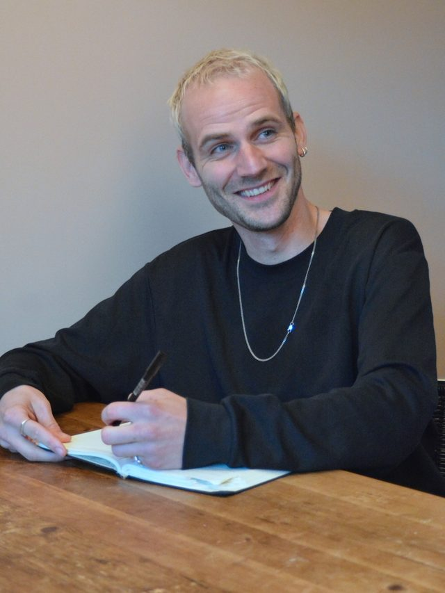

Gebouwde omgeving · Energietransitie
Over mij
Ruim 10 jaar actief in de gebouwde omgeving en energietransitie, op verschillende niveaus: van zelf projecten uitvoeren en aanbestedingstrajecten trekken tot strategievorming en realisatie vanuit een directierol.

Waar ik in geloof
- Oprechte betrokkenheid boven uurtje factuurtje
- Vindingrijkheid en nieuwsgierigheid boven het vertrouwde
- Snel leren boven afwachten
- Humor en relativering boven dingen zwaar maken
Loopbaan
Tijdlijn
-
Vanaf september 2026
Zelfstandige
Eigen praktijk in tendermanagement, subsidiebegeleiding, programmamanagement en interim, in de gebouwde omgeving en energietransitie. Vanaf januari 2027 voltijds.
-
Sinds 2024
Lid directieteam, REL
Een van drie directieleden, verantwoordelijk voor personeel, juridische zaken, risico’s en de inrichting van de organisatie, naast strategische projecten. Meegeschreven aan een MOOI-aanvraag bij RVO in 2026, voor een landelijke datastandaard in woningverduurzaming.
-
2020 tot 2024
Sr. adviseur energietransitie, REL
Programmamanager van de DoeTank Publieke Ontzorging, met vier gemeenten en REL als penvoerder. Een onderzoekssamenwerking met de Vrije Universiteit Amsterdam opgezet.
-
2016 tot 2020
Programmamanager gebouwde omgeving, FME
Gestart als projectmanager. Vernieuwingstrajecten met technologieleveranciers en overheden, en belangenbehartiging voor lidbedrijven in de gebouwde omgeving.
-
2015 tot 2016
Projectadviseur, NAM
Opdrachtgevers en aannemers begeleid naar aardbevingsbestendige nieuwbouw in Groningen, volgens de richtlijn NPR 9998.
-
2008 tot 2015
Bouwkunde, Sociale Planologie en Culturele Geografie
Afgestudeerd in Bouwkunde (BBE) aan de Hanzehogeschool Groningen, en in Sociale Planologie (MSc) en Culturele Geografie (MSc) aan de Rijksuniversiteit Groningen.
Contact